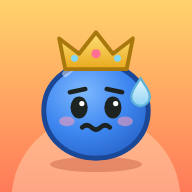

Support
How do I play?
Raid your rival's half of the board: at the start of your turn, each of your pieces there adds 1 to their Stress. A raider can do that three times before it cracks, so bring it back to the middle row or your half to refill its nerve. First to 10 Stress loses, and capturing the enemy Crown wins on the spot. The in-app tutorial (Settings › Tutorial) and rules (Settings › How to play) show the rest.
Common questions
- Can I undo a move?
- Yes. Tap Undo during any game against the computer or a friend. If you lose, Undo last move on the results screen takes you back into the game.
- Does it need an internet connection?
- No. Everything, including the daily puzzle, works offline.
- I broke my daily streak. Can I get it back?
- Not yet. The streak counts consecutive days with a solved daily puzzle. Your best streak is always kept in Collection › Stats.
- What do the stars and dots on puzzles mean?
- A gold star means you solved that puzzle without a hint. A check means you used a hint: solve it again without one to earn the star. A dot means you've tried it but haven't solved it yet. Your tries count across sessions, so the results screen can tell you which try did it.
- Why does the game let me keep playing after a wrong move?
- So puzzles reward thinking rather than guessing. Every attempt plays out to the move limit, with Red defending as well as it can. If Red survives, tap Show where it slipped to see the move that let it escape and Red's answer. That counts as a hint, so the puzzle won't get its gold star.
- How do I open the Expert and Grandmaster packs?
- Each pack opens once you've solved five puzzles in the pack before it.
- How do I unlock new boards?
- By earning stars against rivals, solving puzzles, keeping a daily streak, and beating The Monk. Collection › Boards shows what each one needs.
- How do I start over?
- Settings › Reset progress, then tap again to confirm. This can't be undone.
- Will my progress move to a new phone?
- Not automatically. Progress is stored on this device only, which is also why Stress needs no account.
Contact
Found a bug or have an idea? Open an issue on GitHub. Please include your device and what happened.
See also: Privacy · Play Stress in your browser